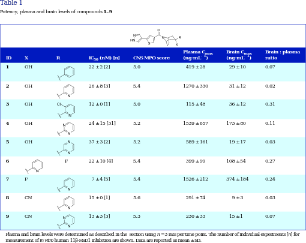

<?xml version="1.0" encoding="UTF-8"?>
<table title="table1" id="table1" class="tabcontent" xmlns="http://www.w3.org/1999/xhtml">
 <tr>
  <td>
   
   <p>corpus-oa-validation/10.1111_bph.13699/tables/table1/table.svg.png</p>
  </td>
  <td>
   <table class="table">
    <caption/>
    <tr>
     <th class="cell">1 2 3 4 5 6 7 8 9 </th>
     <th class="cell">OH OH OH OH OH F CN CN </th>
     <th class="cell">F </th>
     <th class="cell">22 ± 2 [2] 26 ± 8 [3] 12 ± 0 [1] 24 ± 15 [31] 37 ± 3 [2] 22 ± 10 [4] 7 ± 4 [5] 15 ± 0 [1] 13 ± 3 [3] </th>
     <th class="cell">5.0 5.4 5.0 5.2 5.2 5.4 5.4 5.6 5.3 </th>
     <th class="cell">419 ± 28 1270 ± 330 115 ± 48 1539 ± 657 589 ± 161 399 ± 99 1526 ± 212 291 ± 74 230 ± 33 </th>
     <th class="cell">29 ± 10 31 ± 12 36 ± 12 173 ± 80 19 ± 17 108 ± 54 374 ± 184 9 ± 3 15 ± 1 </th>
     <th class="cell">0.07 0.02 0.31 0.11 0.03 0.27 0.24 0.03 0.07 </th>
    </tr>
    <tr>
     <td class="cell">Plasma and brain levels were determined as described in the</td>
     <td class="cell">section using n = 3 rats per time point. The number of individual experiments [n] for</td>
    </tr>
    <tr>
     <td class="cell">measurement of in vitro human 11β-HSD1 inhibition are shown. Data are reported as mean ± SD.</td>
     <td class="empty"/>
    </tr>
   </table>
   <p>corpus-oa-validation/10.1111_bph.13699/tables/table1/table.svg.html</p>
  </td>
 </tr>
</table>
